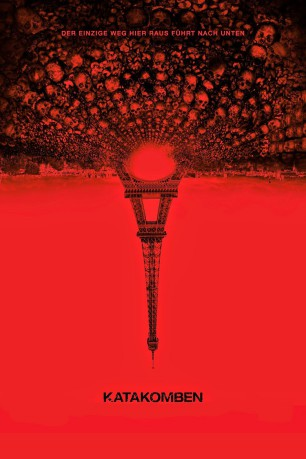

gesehen am 10.01.2017
gesehen am 10.01.2017Alternativ: As Above, So Below gesehen am 10.01.2017
 
 IMDB-Wertung: 6.2 / 10
IMDB-Wertung: 6.2 / 10  Metascore:
Metascore: 
Die Archäologiestudentin Scarlet Marlowe leitet eine Gruppe junger Entdecker, bestehend aus George, Benji, Papillon und Souxie. Die fünf begeben sich auf eine Reise unter das Pflaster von Paris, tief in die Katakomben der französischen Metropole. Es gilt, die unterirdischen Gänge, die sich über 300 Kilometer unter der Hauptstadt erstrecken, auszukundschaften - und verborgene Kammern zu entdecken. Das Team ahnt allerdings nicht, dass unter den Gebeinen der Toten sehr lebendige, dunkle Kräfte begraben liegen. Das personifizierte Grauen macht schon bald Jagd auf die jungen Forscher, die ihm in den Tiefen der Ruinen hilflos ausgeliefert scheinen. Und dann ist da noch das Grauen, das die Forscher selber mit nach unten gebracht haben: Das Team wird von traumatisierenden Erinnerungen aus der Vergangenheit heimgesucht – von den persönlichen Dämonen, die wir alle in uns tragen.
Jahr: 2014
Dauer: 93 Minuten
FSK: 16
Land: USA Studio: Universal PicturesTonspuren: DTS - ,
Untertitel: Deutsch, Englisch,
Auflösung: 1080p (1920x1040) Größe: 7680 MB
Genre: Thriller, Horror, Mystery
Regisseur: John Erick Dowdle
Drehbuch: Abi Morgan
Soundtrack:
Darsteller:
 Perdita Weeks als Scarlett
Perdita Weeks als Scarlett Edwin Hodge als Benji
Edwin Hodge als Benji François Civil als Papillon
François Civil als PapillonDatei: X:\2014(G-M)\Katakomben (2014, FSK16, 1920x1040).mkv seit 17.07.2016
Festplatte: HD 2013(I-Z)-2014(A-Z)
 Es gibt insgesamt 136 Filme in der Gruppe '2014(G-M)'
Es gibt insgesamt 136 Filme in der Gruppe '2014(G-M)'